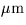
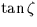
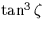
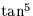
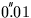

| TDK | D | ambient temperature at the observer (degrees K) |
|---|---|---|
| PMB | D | pressure at the observer (mB) |
| RH | D | relative humidity at the observer (range 0-1) |
| WL | D | effective wavelength of the source () |
| REFA | D |  coefficient (radians) |
|---|---|---|
| REFB | D |  coefficient (radians) |
| worst | RMS | |
|---|---|---|
| optical/IR | 62 | 8 |
| radio | 319 | 49 |
| mas | mas |
For this particular set of conditions:
| sla_REFRO | sla_REFCOQ | Saastamoinen | |
| 10 | 10.27 | 10.27 | 10.27 |
| 20 | 21.19 | 21.20 | 21.19 |
| 30 | 33.61 | 33.61 | 33.60 |
| 40 | 48.82 | 48.83 | 48.81 |
| 45 | 58.16 | 58.18 | 58.16 |
| 50 | 69.28 | 69.30 | 69.27 |
| 55 | 82.97 | 82.99 | 82.95 |
| 60 | 100.51 | 100.54 | 100.50 |
| 65 | 124.23 | 124.26 | 124.20 |
| 70 | 158.63 | 158.68 | 158.61 |
| 72 | 177.32 | 177.37 | 177.31 |
| 74 | 200.35 | 200.38 | 200.32 |
| 76 | 229.45 | 229.43 | 229.42 |
| 78 | 267.44 | 267.29 | 267.41 |
| 80 | 319.13 | 318.55 | 319.10 |
| deg | arcsec | arcsec | arcsec |
The values for Saastamoinen's formula (which includes terms up to ) are taken from Hohenkerk and Sinclair (1985).
The results from the much slower but more accurate sla_REFCO routine have not been included in the tabulation as they are identical to those in the sla_REFRO column to the 
resolution used.
SLALIB --- Positional Astronomy Library